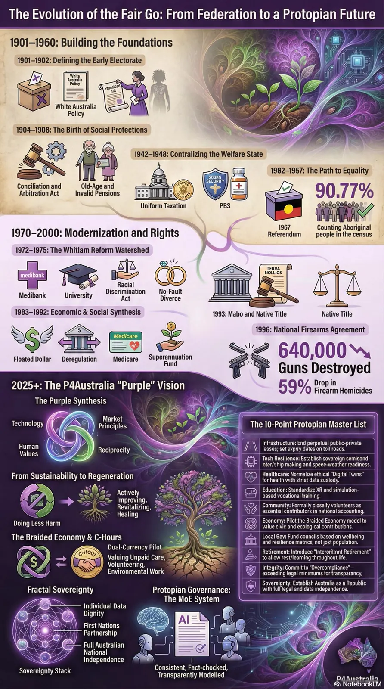

Photos, stories, places, songs, values, routines and family knowledge become a living memory map with clear consent settings.

19B / Clinical path
Care before spectacle.
Aura Genesis only earns trust if the grounded version helps people: dementia support, digital memoirs, carer relief, wellbeing reports and ethical AI health pathways.
Real de-slop
Make health AI boringly useful.
The public-facing magic is a life story people want to use. The serious layer is a clinical wrapper: structured evidence, consent, safety, privacy, clinician-readable reports and clear limits on what the system can claim.
Three practical pathways
Track quality of life, function, behaviour triggers, calm prompts, carer burden and useful patterns over time.
Use AI-guided reflection and biosensor summaries to help people notice stress, sleep, recovery, social connection and support needs earlier.
Australian health stack
Clinical evidence ladder
Phase 1Feasibility with small participant-carer dyads: usability, consent, safety, comprehension and whether people actually use it.
Phase 2Pilot study with clinical partners: quality-of-life, function, carer burden and report usefulness.
Phase 3Regulatory and funding evidence: technical file, privacy, cybersecurity, human factors and professional adoption.
Anti-slop rules
Do not diagnose from vibes.
Do not call a mirror a doctor.
Do not sell surveillance as care.
Do not make families repeat the same story to every system.
Source anchors
Medicare is the universal health insurance scheme, PBS medicines sit inside Medicare access, private insurance premiums changed in 2026, and NDIS funds eligible disability supports. Medical software claims would need the TGA software-based medical device pathway and human research needs ethics discipline.
PTSD care and the wider care system
The PTSD Twinkle focuses particularly on veterans and first responders, including the burden of repeating traumatic histories through claim forms. Trauma-informed care needs continuity, consent, choice and an affordable path to qualified help. Administrative relief is useful only if people can still reach a human, correct records and refuse automated handling. A digital navigation proposal does not establish clinical effectiveness.
A named care coordinatorMay reduce repeated histories and missed handovers, but needs time, training and consent.
Peer and community supportCan reduce isolation and improve navigation with paid supervision; it complements clinical treatment.
Accessible specialist pathwaysNeed funding, workforce and regional access, not simply a new referral form.
Care pathways should be evaluated on waiting time, continuity, patient choice and safe escalation. Ask services for private consumer-feedback routes. Public advocacy can describe a system failure without exposing a person’s trauma history.
From the original Twinkle seeds
Earlier clip briefs and proposals are kept here alongside the current evidence and options above. These are exploratory ideas, not adopted policy.
Twinkle 07 - earlier seed and related proposals
A waiting-room rant about gap fees, ten-minute medicine and appointments that arrive next Thursday week, then a hard turn into care hours, paperwork-eating AI and prevention that actually gets funded.
Open seed
The everyday gripe
Straight to camera: the gap fee is forty bucks, the appointment is Thursday week, and the diagnosis is "it's viral, drink fluids, that'll be the card machine". The doctor isn't the villain; the doctor is drowning in billing codes. The trapdoor is a health lane where care hours get funded, machines carry the paperwork, and prevention is a line item instead of a slogan. This seed is open: film your own waiting room.
Description
BaitBarely one GP in ten can bulk-bill everyone now, and people are visibly skipping care because of the gap. Everyone has a waiting-room story.
SwitchOff the doctor's back and onto the machinery: rebates frozen against costs, six-minute medicine, and a system that pays for throughput instead of health.
SystemThe clinical path: care hours funded directly, assistive AI eating the admin, human judgement kept where it belongs, prevention counted as care.
The one-breath drop
Said before the flush
"Fund care hours, not billing codes, and make the AI do the paperwork so the doctor can actually look at you." Second breath lives in the room.
Twinkle 22 - earlier seed and related proposals
The quiet Twinkle. Same format, different rules: no toilet, no gag, and the joke stops halfway on purpose. For the veterans and first responders whose dark humour already carries this, then a hard turn into care that starts the day you ask.
Open seed / quiet variant
The everyday gripe
Any quiet place: the ute tray, the shed, the end of the jetty. The rant starts like the others, dark and funny the way veterans and first responders already tell it: the deployment was fine, it's the claim form that needs a support animal. Then, halfway, the clip goes quiet on purpose, because the punchline is that people died waiting for paperwork. The joke belongs to the people who carry it, aimed only at the machinery: backlogs measured in years, forms that ask the same wound to be described five times. This seed is open, and it asks for more care than the others: never at the person, never at their service, always at the system.
Description
BaitThe dark humour already exists in every mess hall, ambulance bay and fire station in the country. This format just gives it a doorway.
SwitchThe laughter stopping is the switch. A Royal Commission spelled out what the backlog costs in lives; the clip does not need to raise its voice about it.
SystemThe clinical path plus mutual care: care that starts on request rather than on approval, one human owning each claim, and a deadline that binds the department instead of the person.
The one-breath drop
Said in the quiet
"One claim, one human, one deadline the department has to meet. Care starts the day you ask." Second breath lives in the room.